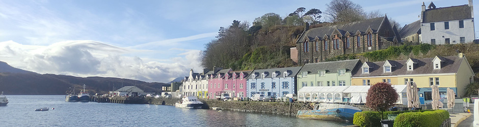
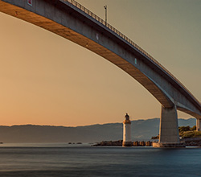
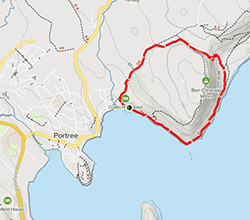

City of Portree
The name of Portree comes from the Gaelic "Port-an-Righ" which in English translates as "King's Port". Formerly known as Kiltraglen, this town is believed to have changed its name after King James V of Scotland undertook a persuasive voyage to the island accompanied by his fleet of warships. There he tried to unite the clans of MacLeods and MacDonalds in order to get them to support his interests.
Portree is known for being the scene of several historical events in the country. It was at the Royal Hotel (formerly MacNab's Inn) that Bonnie Prince Charlie took his last farewell in 1746 to Flora MacDonald, a fact that would lead to the popular song and theme song of the Outlander series "The Skye Boat Song". Also from its port, many people left for North America at the beginning of the 18th century, a time of famine and overpopulation on the island.
In the 19th century Portree became known as the business center of Skye, as it was easily accessible by steamers from Glasgow. It was during this period that the city began to take on more tourist prominence, becoming the busy region it is today. In fact, the number of tourists has acquired such a dimension that the occupation of the city doubles during the high season of visits.
If you like the literary saga of Harry Potter, surely this city would already sound familiar to you, since it gives its name to one of the Quiddich teams, the Pride of Portree. Portree is reference in the movie “My Girlfriend's Wedding” as well.

How to Get to Portree
Being the largest city in the region, Portree has several entrances for visitors. In the case of public transport, the bus is the only option. Of course, you will find departures with direct buses from cities such as Glasgow, Inverness or Fort William, which makes your trip much easier. For more information take a look at the Citylink page.
In case you want to approach Portree by car, you will only have to travel the A87 road, passing through the island of Eilean Bàn through the Skye bridge. There are ferries available from Lochmaddy, Mallaig or Tarbert.

A good way to start your visit to this magnificent place is through the Scorrybreac Circuit. This is an excursion that starts at the main port. Then it goes through the entire northern area of the bay and returns to the meeting point.
This circuit offers an approach to the most impressive landscapes of Portree. Huge cliffs, unusual rock formations and vast green areas are just some of the natural elements that await you.
And the best thing about the tour is that you can appreciate all this in just an hour and a half. It is an excellent option if you want to know the natural landscapes that surround the city of Portree.